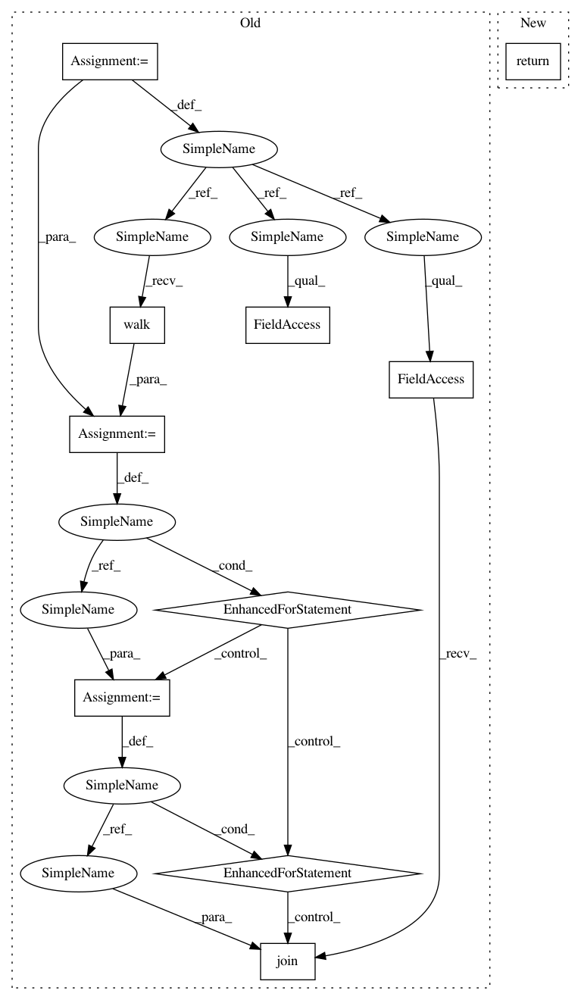

f6c83fb64a368aa529dc6d7335cc65c682acdda3,mlflow/store/file_store.py,FileStore,_get_run_files,#FileStore#Any#Any#,407
Before Change
if len(source_dirs) == 0:
return run_dir, []
file_names = []
for root, _, files in os.walk(source_dirs[0]):
for name in files:
abspath = os.path.join(root, name)
file_names.append(os.path.relpath(abspath, source_dirs[0]))
if sys.platform == "win32":
// Turn metric relative path into metric name.
// Metrics can have "/" in the name. On windows, "/" is interpreted as a separator.
// When the metric is read back the path will use "\" for separator.
After Change
subfolder_name = FileStore.TAGS_FOLDER_NAME
else:
raise Exception("Looking for unknown resource under run.")
return self._get_resource_files(run_dir, subfolder_name)
def _get_experiment_files(self, experiment_id):
_validate_experiment_id(experiment_id)
experiment_dir = self._get_experiment_path(experiment_id, assert_exists=True)
In pattern: SUPERPATTERN
Frequency: 3
Non-data size: 10
Instances
Project Name: mlflow/mlflow
Commit Name: f6c83fb64a368aa529dc6d7335cc65c682acdda3
Time: 2019-07-28
Author: 52183359+ankitmathur-db@users.noreply.github.com
File Name: mlflow/store/file_store.py
Class Name: FileStore
Method Name: _get_run_files
Project Name: mlflow/mlflow
Commit Name: f6c83fb64a368aa529dc6d7335cc65c682acdda3
Time: 2019-07-28
Author: 52183359+ankitmathur-db@users.noreply.github.com
File Name: mlflow/store/file_store.py
Class Name: FileStore
Method Name: _get_run_files
Project Name: matplotlib/matplotlib
Commit Name: 66348a9259bc034d0f6b21cfb554f8b2f0af94b0
Time: 2018-03-23
Author: anntzer.lee@gmail.com
File Name: tools/triage_tests.py
Class Name:
Method Name: find_failing_tests
Project Name: pantsbuild/pants
Commit Name: da0989f9f00cf2a9eca58410a721d23a1fdf72bb
Time: 2019-08-19
Author: ericarellano@me.com
File Name: contrib/python/tests/python/pants_test/contrib/python/checks/tasks/checkstyle/test_checkstyle.py
Class Name: CheckstyleTest
Method Name: build_checker_wheel